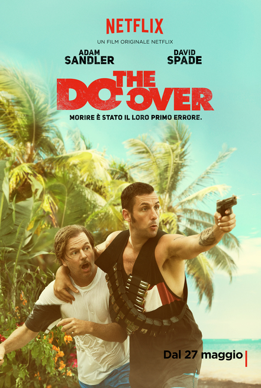
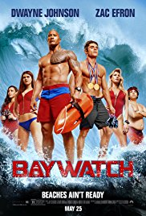
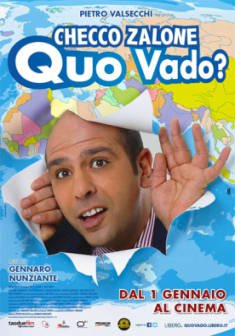
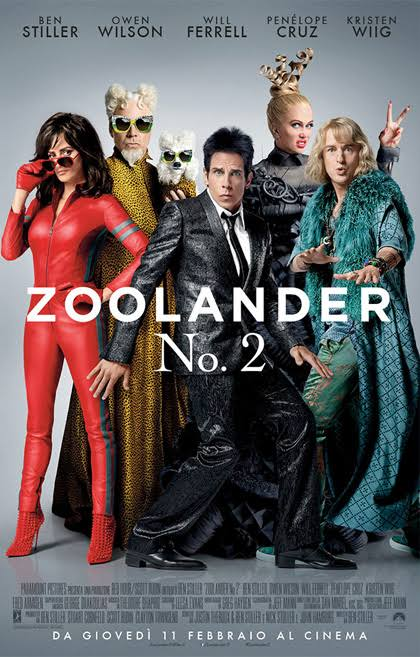
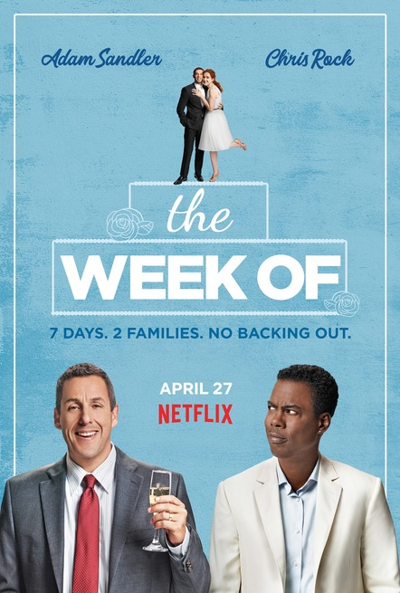

Film comico ben realizzato, che riesce pienamente nell'intento di far divertire guardando un film leggero. La coppia Spade-Sandler funziona alla grande,
anche grazie ai caratteri praticamente opposti dei loro personaggi, che vanno però pian piano somigliandosi durante il film. Proprio grazie a questa classica accoppiata del
ragazzo per bene con la testa calda che lo convince a compiere determinate azioni che da solo non compirebbe mai, le risate non mancano. Un Adam Sandler davvero esilarante, che sfoggia frasi insensate e non,
con la serietà disarmante che lo contraddistingue, in questo film un re dell'insensibilità e del no-sense. Il finale potrebbe anche strappare qualche lacrima
a qualcuno, visto il lato da una parte comunque "profondo" del film. Molto buona la recitazione dei protagonisti, ottima la fotografia. Verdetto per questo film?
GUARDO

In questo remake della serie tv di Baywatch troviamo i due bagnini (interpretati da Zac Efron e Dwayne Johnson" alle prese con situazioni demenziali.
I due dovranno gestire situazioni poliziesche ma nelle vesti di bagnini, convinti di avere un'autorità che invece non possiedono. Le situazioni bizzarre
sono ciò che caratterizza il film, insieme alla presenza di una buone dose di azione. La scelta degli attori è
stata basata sicuramente sui loro fisici statuari dato che il 90% del tempo lo passano senza maglia. Questo però non cambia il fatto che i sorrisi con questo film
sono assicurati, grazie a una coppia di attori ben assortita e a dei co-protagonisti che si rendono ancor più ridicoli. Inoltre è una bella occasione per
rifarsi gli occhi e per passare un'ora e mezza in assoluta spensieratezza. Verdetto per questo film?
GUARDO

Uno dei pochi attori comici italiani degli ultimi anni di cui valga la pena guardare ogni film. Non a caso questo ultimo capitolo ha registrato in Italia
il record di incassi. Checco Zalone riesce a sbeffeggiare l'italiano medio con una fantastica parodia sul mito del "posto fisso". Scene geniali,
accompagnate da battute con una giusta dose di dialetto barese, rendono questo film irresistibile. Ogni italiano potrà riconoscersi in ciò che vede e nei
comportamenti del protagonista. Il film affronta anche il tema dell'italiano all'estero che inizia a sentire la mancanza della sua amata Italia, nonostante
i grandi difetti di questa nazione e la sua arretratezza rispetto ad altri Paesi molto più efficienti e civili. Inoltre l'espressività di Checco
è disarmante. Insomma, risate a crepapelle assicurate! Verdetto per questo film?
GUARDO

Secondo capitolo della saga che cerca di ricalcare a distanza di tempo il successo del primo, ma in modo abbastanza fallimentare. Poche le novità rispetto
al primo film, molte delle cose ripetute volendo quasi suscitare un senso di malinconia nello spettatore, ma questo fa cadere il film nella prevedibilità
e nella ripetitività. Un Ben Stiller portato oltre il limite della demenzialità, ruolo sprecato per un attore comico fine e intelligente come lui.
Lo stesso vale per Owen Wilson, senza dubbio preferiti in ruoli comici più "seri". La trama surreale sconfina addirittura nel paranormale e in questioni
ultraterrene. L'ambientazione di Roma sfruttata bene, specialmente durante gli inseguimenti. Azione anche troppo eccessiva per un film comico.
Verdetto per questo film?
PASSO

Film che vuole raccontare delle difficoltà di un padre con problemi economici che desidera a tutti i costi organizzare il matrimonio della figlia.
L'idea non viene ben sviluppata e un Adam Sandler sottotono non aiuta per nulla. Neanche le sue battute riescono a far riprendere il film, che in realtà
sembra non partire neanche. Perchè non c'è mai un vero momento in cui inizi a ridere e non la smetti più da quel momento in poi, vedendo questo film i pochi
sorrisi che farete saranno anche amari, probabilmente proprio per l'argomento trattato. Viene data alla fine troppa importanza al lato sentimentale e affettivo
trascurando l'obiettivo principale: le risate. Davvero poco le scene salvabili. Nemmeno la fotografia è tra le migliori.
Idea e film sviluppati entrambi male. Verdetto per questo film?
PASSO